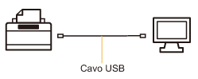
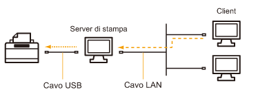

Il driver della stampante è il software necessario per stampare con questa macchina.
 |
Per i dettagli relativi all'ambiente di sistema richiesto per utilizzare il driver della stampante, vedere "Requisiti di sistema per la stampa".
|
|
|
La procedura d'installazione del driver della stampante varia in base all'ambiente di sistema. Vedere la procedura relativa all'ambiente di sistema.
Se stampante e computer sono collegati tramite un cavo USB

Per installare il driver della stampante è possibile procedere nelle modalità seguenti.
<Installazione rapida>
Installa il driver della stampante dal CD-ROM fornito a corredo (installazione del CD-ROM). Allo stesso tempo viene installato anche l'e-Manual.
<Plug & Play>
Rileva la stampante con la funzione Plug & Play e installa il driver della stampante selezionandolo manualmente dal CD-ROM fornito a corredo.
Se la stampante viene utilizzata nell'ambiente operativo del server di stampa

Se il proprio computer è il server di stampa
Per i dettagli relativi alla procedura di installazione del driver della stampante vedere la precedente sezione "Se stampante e computer sono collegati tramite un cavo USB".
|
|
Dopo aver completato l'installazione, configurare il server di stampa.
|
Se il proprio computer è un computer client
Per installare il driver della stampante è possibile procedere nelle modalità seguenti.
<Installazione locale>
È possibile installare il driver della stampante dal CD-ROM fornito a corredo.
<Installazione da download>
È possibile installare il driver della stampante senza utilizzare il CD-ROM fornito a corredo ma scaricando il driver dal server di stampa. Per scaricare e installare il driver della stampante sono disponibili le modalità seguenti.